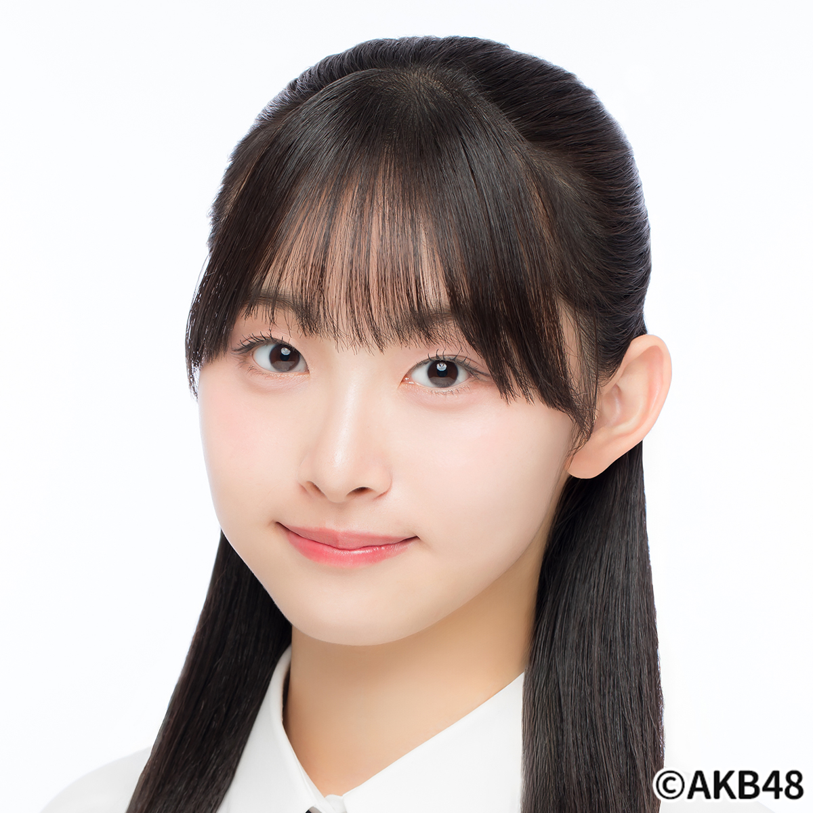
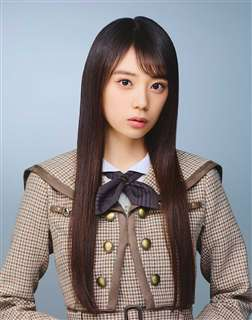

谷川聖 Hijiri Tanikawa（AKB48 Team8）
- 2000年12月26日、鹿角郡小坂町、Ａ型、14年4月→19年5月、ひじりん、160cm
布谷梨琉 Riru Nunoya（AKB48 Team8）
- 2003年2月14日生、Ｂ型、19年10月→20年9月、171cm
村雲颯香 Fuka Murakumo（NGT48 1期生）
- 1997年7月5日生、秋田市、Ｏ型、2015年7月→2019年9月、もふちゃん・もふ
- 1st『青春時計』、2nd『世界はどこまで青空なのか？』、3rd『春はどこから来るのか？』
渡邉葵心 Kiko Watanabe（AKB48 21期研究生）

- 2007年7月12日生、25年12月→、きこちゃん
生駒里奈 Rina Ikoma（1期生）
- 1995年12月29日、由利本荘市、ＡＢ型、2011年8月21日→2018年5月、153cm
- 【乃木坂46シングル】（★センター）1st★『ぐるぐるカーテン』、2nd★『おいでシャンプー』、3rd★『走れ！Bicycle』、4th★『制服のマネキン』、5th★『君の名は希望』、6th『ガールズルール』、7th『バレッタ』、8th『気づいたら片思い』、9th『夏のFree&Easy』、10th『何度目の青空か？』、11th『命は美しい』、12th★『太陽ノック』、13th『今、話したい誰かがいる』、14th『ハルジオンが咲く頃』、15th『裸足でSummer』、16th『サヨナラの意味』、17th『インフルエンサー』、18th『逃げ水』、19th『いつかできるから今日できる』、20th『シンクロニシティ』
- 【AKB48シングル】37th『心のプラカード』、38th『希望的リフレイン』、39th『Green Flash』、40th『僕たちは戦わない』
鈴木絢音 Ayane Suzuki（2期）
- 1999年3月5日、大潟村、Ｏ型、2013年→23年3月
- 21st『ジコチューで行こう！』、23rd『Sign Out!』、28th『君に叱られた』、29th『Actually…』、30th『好きというのはロックだぜ！』、31st『ここにはないもの』
矢田萌華 Moeka Yada（6期）

- 2008年1月27日、羽後町、Ｂ型、2025年2月→、
- 2026年1月1日に秋田魁新報社が展開する「秋田が好きだ！」キャンペーンキャラクターに就任した。